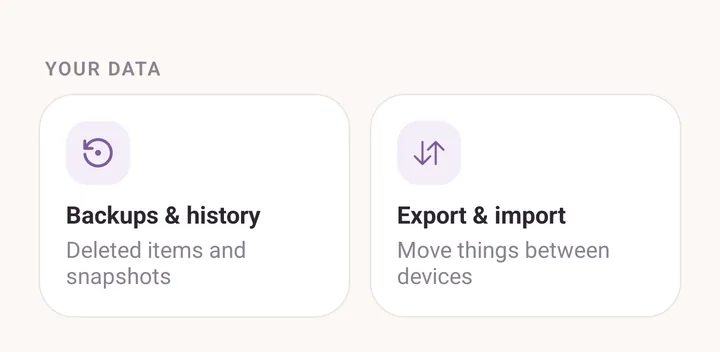
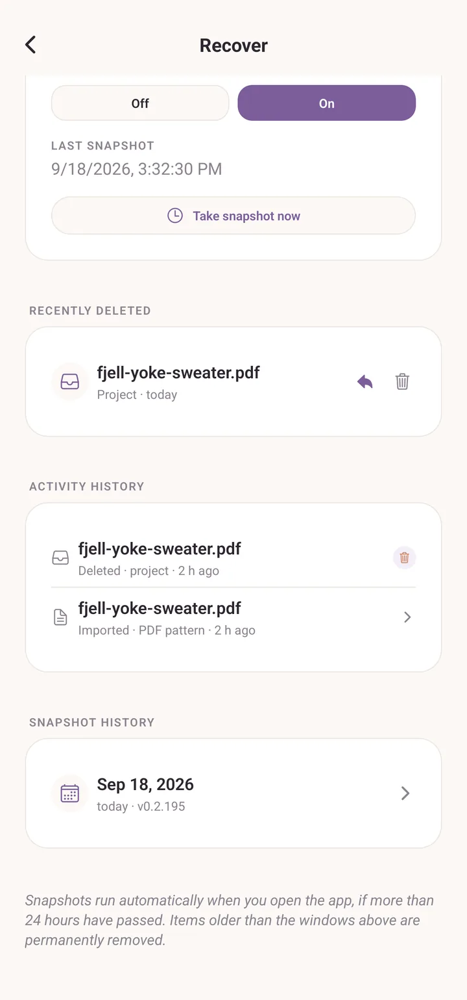
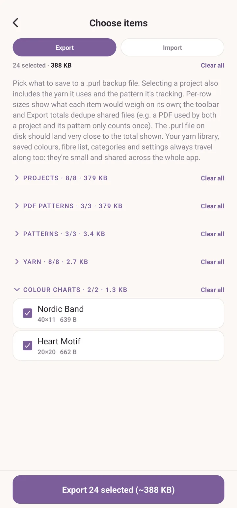
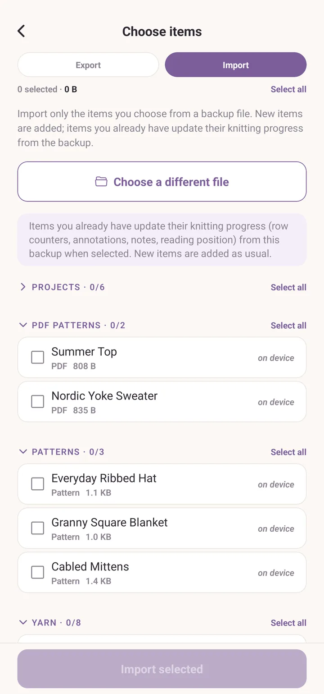
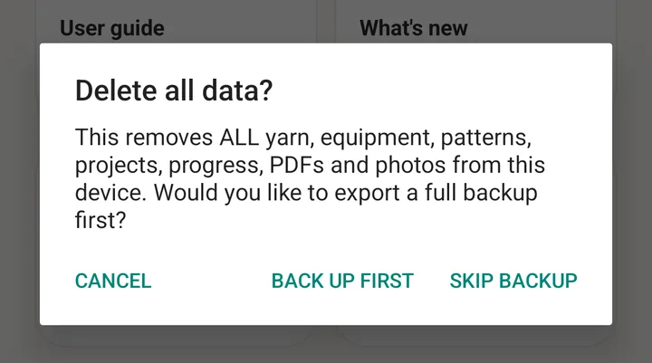

Backups and recovery
Three layers of protection against losing your work.
The short version
- Recently deleted: anything you delete sits in the trash for 30 days. One tap to restore.
- Snapshots: Purl takes a small snapshot of everything once a day and keeps seven days of them. The way back from something that went badly wrong.
- Backup files: one
.purlfile with everything in it, saved wherever you like. The way to a new device, and the only copy that survives losing this one.
All three live on the More tab, under Your data: Backups & history for the first two, Export & import for the third.

Recently deleted
Delete a yarn, a piece of equipment, a project or a pattern and it does not actually go away. It sits in the trash for 30 days.
Open More, then Backups & history. The first section is Recently deleted, newest first. Each entry offers Restore, which brings the record back with the files it had, or Delete forever, which does exactly that.
Under it, Activity history is a running timeline of what you have added, imported, restored and deleted lately, so you can see both directions of what you have been doing.
After 30 days, trash entries are cleared out automatically.

Snapshots
Purl saves a snapshot of its whole state automatically, when you open the app and more than 24 hours have passed. Every yarn, every pattern, every project, every preference. Seven days are kept and older ones are pruned.
They live inside Purl's own storage, not anywhere you have to manage.
The same screen carries the controls: Recovery snapshots with On and Off, the date of the Last snapshot, and Take snapshot now if you are about to do something drastic.
To use one, scroll to Snapshot history and tap a date. Purl compares that snapshot against your data now and lists only what differs, marked Deleted since or Changed since. Tap Restore on an item to bring it back.
Restoring a changed item overwrites the current version with the snapshot version, so if you might want today's version back, take a snapshot first.
The catch: snapshots are local-only. A factory reset of your phone wipes them too. For off-device safety, use backup files.
Backup files
Open More, then Export & import. The screen is headed Choose items and has two modes, Export and Import.
Exporting
- Tap Export.
- Tick what you want to keep, section by section: Projects, PDF patterns, Patterns, Yarn, Equipment, Colour charts. Select all beside a section heading ticks everything in that section. Ticking a project brings its yarn and the pattern it is tracking along automatically.
- Tap Export, at the bottom. Every section starts open, so on a full library that button is a long way down; tap a section heading to fold it away and the bottom comes up quickly. The button shows how many items and roughly how large the file will be.
- Pick where it goes. On Android you choose a folder; otherwise the system share sheet opens, so you can put it in Drive, mail it to yourself, or save it to Files.
Your yarn library, saved colours, fibre list, categories and settings always travel along. They are small, they are shared across the whole app, and you would always want them.

Importing
Two ways in: Import inside Export & import, then Choose backup
file; or tap a .purl file in your file manager, which opens Purl on this
screen with the file already loaded.
Either way you get a preview, item by item, before anything changes. Items you already have are tagged on device, and newer in backup where the backup's copy is more recent. Tick what you want and tap Import.
New items are added. Items you already have keep their place and take their knitting progress from the backup: row counters, annotations, notes, reading position. Nothing you leave unticked is touched.

Sharing patterns and libraries separately
Two smaller formats, for sharing one thing rather than everything:
- .purlp: a single hand-written pattern. Share it from the pattern's own screen. Opening one adds that pattern to the library.
- .purlt: your yarn library, for bootstrapping a friend who is starting from nothing. Share it from the share icon in Yarn library. See Barcodes and the yarn library.
These are tiny files and do not include your yarn, projects, or photos. Just the named thing.
Delete all data on this device
At the very bottom of the More tab is Delete all data on this device. It is the most dangerous thing in the app, so it asks twice, and offers you a way out in between.
- Delete all data? explains what goes: all yarn, equipment, patterns, projects, progress, PDFs and photos. It offers Back up first, Skip backup, or Cancel.
- Back up first runs a full export and only carries on once the file is safely written. If the export fails, Purl stops there and deletes nothing.
- Are you sure? is the last step. Delete everything wipes the device, including the recently-deleted bin and the recovery snapshots, and cannot be undone.
Take the backup. It costs one tap.

Moving everything to a new phone
- On the old device, open More, then Export & import.
- Tap Export, then Select all on every section.
- Tap Export at the bottom and save the
.purlfile somewhere you can reach from the new device: Drive, email, a USB transfer. - Install Purl on the new device.
- Open the
.purlfile from the new device's file manager, or open More, Export & import, Import, then Choose backup file. - Check the preview, tap Select all on every section, and tap Import.
- Close and reopen Purl.
The new device is empty, so nothing collides. PDFs, photos, drawings, bookmarks, dye lots and counters all travel.
See also
- Yarn stash: the stash that is being backed up.
- Barcodes and the yarn library: the
.purltformat. - Patterns: the
.purlpformat.